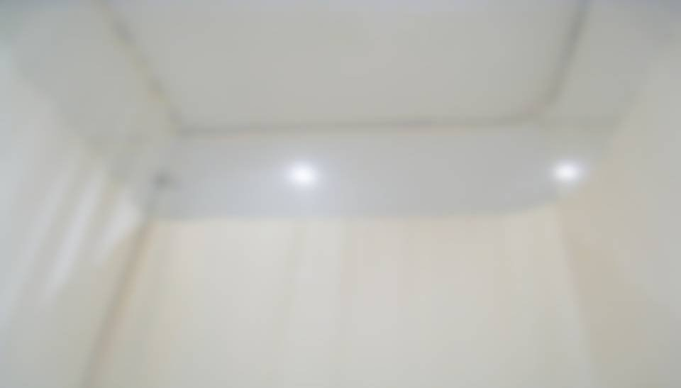

This scene is not unlocked yet in your progress
A New World

The clock passed 20:00.
Right about now, are Dad and Mom worried?
Right about now, are Dad and Mom worried?

"Zzz... zzz..."
Haruka must have been tired; she fell asleep after dinner.
If we can make it to morning like this, Haruka will probably be able to relax too.
Haruka must have been tired; she fell asleep after dinner.
If we can make it to morning like this, Haruka will probably be able to relax too.
Goto had gone down to the first floor.
Apparently her sister had just come home, and she hadn't come back for about 10 minutes.
Apparently her sister had just come home, and she hadn't come back for about 10 minutes.

Just then, Goto came back.
She looked somehow gloomy.
She looked somehow gloomy.
"What's wrong? Did something happen?"
"No, it's nothing... It's just that I don't get along with Sis very well."
"No, it's nothing... It's just that I don't get along with Sis very well."
"Did something happen with your sister?"

"Hmm, we were close sisters until I was in elementary school...
Probably because people make such a fuss over me as a genius girl, it got hard for Sis to be around me, I think..."

Goto didn't usually let this kind of thing show, but she kept looking sad.
Goto must love her sister.
But the more Goto tries to get close to her sister, the further away she drifts.
At the cafe this afternoon too, I'd sensed a strange distance.
But the more Goto tries to get close to her sister, the further away she drifts.
At the cafe this afternoon too, I'd sensed a strange distance.

"Oh, but please don't worry about it! Sis went out again anyway."
An emptiness seeped through the big grin Goto flashed.
An emptiness seeped through the big grin Goto flashed.
―I turned my eyes toward Haruka.
I recalled Haruka's confession from this afternoon.
Haruka's father has already passed away.
Haruka must have gone through painful things too, things I can't understand.
Haruka's father has already passed away.
Haruka must have gone through painful things too, things I can't understand.
"Niimura-senpai must be worn out after everything that's happened."
Seeing Haruka like this, what does Goto think of her?
Seeing Haruka like this, what does Goto think of her?
"Hey, Goto... will you come downstairs with me?"
"Understood. I don't understand all of it, but I'll tell you what I do understand."
We turned off the light and quietly left the room so as not to wake Haruka.
"Understood. I don't understand all of it, but I'll tell you what I do understand."
We turned off the light and quietly left the room so as not to wake Haruka.

There was a faint smell of perfume in the living room.
It was the same scent as the waitress I'd smelled at the cafe.
It must have belonged to Goto's sister.
It was the same scent as the waitress I'd smelled at the cafe.
It must have belonged to Goto's sister.
"I'll make some tea. Please have a seat on the sofa."
Goto went into the kitchen next to the living room.
Apart from the sounds Goto was making, I couldn't hear a thing.
The living room lights were on, but it was a hazy orange indirect light, a little dark.
The living room lights were on, but it was a hazy orange indirect light, a little dark.
"Here you go."

The tea Goto served came in an expensive-looking teacup.
The tea had a lovely aroma, too, like nothing I'd ever smelled.
Could the Goto family be rich?
The tea had a lovely aroma, too, like nothing I'd ever smelled.
Could the Goto family be rich?
"Senpai, do you remember? The first time we talked..."
Goto spoke with a gentle, slightly grown-up smile.
Goto spoke with a gentle, slightly grown-up smile.
"It was May, right after I'd started middle school. Senpai, you were a second-year in middle school back then."

Senpai was in the volleyball club in middle school.
I'm short, so I never meant to take it seriously, but I joined the same volleyball club because my parents used to play.
And because I just wanted some chance to do a sport.
I'm short, so I never meant to take it seriously, but I joined the same volleyball club because my parents used to play.
And because I just wanted some chance to do a sport.
"What's wrong, Kogori! You can't even do that?!"
The coach was hurling abuse at Senpai.
"N-not yet! One more!"
Senpai refused to let the coach's grueling drills beat her, and chased the ball desperately.
But even to be kind, you couldn't call Senpai's performance good.
The coach was hurling abuse at Senpai.
"N-not yet! One more!"
Senpai refused to let the coach's grueling drills beat her, and chased the ball desperately.
But even to be kind, you couldn't call Senpai's performance good.
"That's enough, Kogori. Okay, next!"
"Please wait...! Until I get it... please let me keep going...!"
Senpai could barely stand anymore, but she was still trying to hang on.
Maybe the coach gave in to her persistence too; one more ball came, hit easier than before.
"Please wait...! Until I get it... please let me keep going...!"
Senpai could barely stand anymore, but she was still trying to hang on.
Maybe the coach gave in to her persistence too; one more ball came, hit easier than before.
"I did it...! I finally did it...!"
Senpai had finally managed to touch the ball.
The other upperclassmen let out a sigh too.
But I wondered why this senpai was trying so hard.
Senpai had finally managed to touch the ball.
The other upperclassmen let out a sigh too.
But I wondered why this senpai was trying so hard.
I had never made any real effort before.
I hadn't done anything special for studying, either. I'd always done well on tests.
So I didn't really understand the concept of effort, and what Senpai was doing was something I couldn't comprehend.
I hadn't done anything special for studying, either. I'd always done well on tests.
So I didn't really understand the concept of effort, and what Senpai was doing was something I couldn't comprehend.
I became interested in Senpai, who tried twice as hard as anyone.
It was rare for me to take an interest in another person.
It was rare for me to take an interest in another person.

After practice, Senpai, changed into her uniform, was leaning alone against the gym wall.
"Um... good work today..."
"Um... good work today..."

When I worked up the nerve to speak to her, Senpai turned to me, looking surprised.

"Oh...
Um... who... were you... again...?"
Senpai looked a little troubled.
No wonder. I'd hardly talked to anyone in the club.
Senpai looked a little troubled.
No wonder. I'd hardly talked to anyone in the club.
"Um... I'm Erina Goto... A first-year in the same volleyball club..."
Without meeting Senpai's eyes, I mumbled my answer.
Back then, I was a gloomy person who couldn't even look people in the eye.
"Oh, right, you were there. Sorry I didn't remember you."
"No, it's fine..."
Senpai answered with a smile, but I, the one who'd spoken first, was the distant one.
Without meeting Senpai's eyes, I mumbled my answer.
Back then, I was a gloomy person who couldn't even look people in the eye.
"Oh, right, you were there. Sorry I didn't remember you."
"No, it's fine..."
Senpai answered with a smile, but I, the one who'd spoken first, was the distant one.
"Um... I think I heard your grades are amazing. You're really smart, right?"
Senpai seemed to be desperately searching for something to talk about.
"No, it's not a big deal..."
The moment I said it, I realized I'd put Senpai on the spot after she'd gone to the trouble of finding a topic.
Senpai seemed to be desperately searching for something to talk about.
"No, it's not a big deal..."
The moment I said it, I realized I'd put Senpai on the spot after she'd gone to the trouble of finding a topic.
"So, um... did you need something?"
"No... um... Good work at practice today."
"No... um... Good work at practice today."
"Um... didn't you just say that?"
Two troubled faces, facing each other.
Two troubled faces, facing each other.
"You saw me looking pretty uncool back there... I'm not athletic at all."
Senpai kept the conversation going with a smile.
"Huh...? That was... uncool?"
Senpai kept the conversation going with a smile.
"Huh...? That was... uncool?"
"Well, I mean, I couldn't even do it, and I still pushed the coach into practicing with me..."
I didn't really understand, but isn't that what effort is?
I didn't understand what Senpai meant.
I didn't really understand, but isn't that what effort is?
I didn't understand what Senpai meant.
"Why... why is effort uncool?!"
"Um...
How do I put it... It's hard to explain..."
"Isn't making an effort a really cool thing?! I don't really get it, but Senpai, you were the coolest of anyone!"
"I see... Goto, you're kind of unusual..."
"Isn't making an effort a really cool thing?! I don't really get it, but Senpai, you were the coolest of anyone!"
"I see... Goto, you're kind of unusual..."
That one remark surprised me.
Until then, no one but teachers had ever called me by my surname.
And even they called me Goto-'san'...
I hate my own name.
Until then, everyone had called me 'Erina-chan.'
Until then, no one but teachers had ever called me by my surname.
And even they called me Goto-'san'...
I hate my own name.
Until then, everyone had called me 'Erina-chan.'
I think the name Erina is too cute for me.
On top of that, when people put -chan on it, I feel a kind of wall.
On top of that, when people put -chan on it, I feel a kind of wall.
So being called 'Goto' felt incredibly fresh.
I was happy.
I was happy.
"U-um...
Senpai, you were cool! Keep it up!"
I ran off without hearing Senpai's reply or seeing her reaction.
It was a strange feeling. Like I wasn't myself.
In front of Kogori-senpai, I felt like I'd glimpsed a different me.
It was a strange feeling. Like I wasn't myself.
In front of Kogori-senpai, I felt like I'd glimpsed a different me.
From the next day on too, Senpai showed me how cool she was at practice.
But the harder Senpai tried, the more awkward everyone around her seemed.
"Kogori... that's enough already..."
"I can't watch this anymore..."
"Even the coach looks worn out..."
The others muttered things like that.
But the harder Senpai tried, the more awkward everyone around her seemed.
"Kogori... that's enough already..."
"I can't watch this anymore..."
"Even the coach looks worn out..."
The others muttered things like that.
After practice, Senpai was leaning against the gym wall again.
I ran right over to Senpai.
I ran right over to Senpai.
"Um, good work today."
"Oh, Goto. Good work."
It was our first conversation since we'd talked here a few days before.
Senpai still called me by my surname with nothing attached, just like before.
It was our first conversation since we'd talked here a few days before.
Senpai still called me by my surname with nothing attached, just like before.
"Senpai, why do you make so much effort?"
"Huh? Um... effort, I mean...
I don't really think I'm making that much effort..."
"Then why are you trying so hard?!"
"Well... I mean... I don't really think I'm trying that hard either..."
Again we faced each other with troubled looks.
"Then why are you trying so hard?!"
"Well... I mean... I don't really think I'm trying that hard either..."
Again we faced each other with troubled looks.
"I'm just doing what I can toward something I decided to do. I guess?"
"Something you decided to do...?"
"Something you decided to do...?"

"I'll be a starter by next year's tournament!"
It was the first bright smile Senpai had shown me.
It was the first bright smile Senpai had shown me.
"A starter?"
"Yeah! A starter! But...
"Yeah! A starter! But...
I guess it's impossible after all, hahaha."
"Th-that's not true! I think the one making the most effort, Kogori-senpai, should be a starter!"
At that moment, I thought:
She's trying this hard, so I want to be the one supporting Senpai.
For Senpai, who called me "Goto" and accepted me as an equal.
"Th-that's not true! I think the one making the most effort, Kogori-senpai, should be a starter!"
At that moment, I thought:
She's trying this hard, so I want to be the one supporting Senpai.
For Senpai, who called me "Goto" and accepted me as an equal.
"Um, how do you become a starter?!"
"Huh? That's... I don't know either. Goto, do you want to be a starter too?"
"No... I was just wondering what it'd take for Senpai to become a starter."
Senpai gazed at me, puzzled.
"Huh? That's... I don't know either. Goto, do you want to be a starter too?"
"No... I was just wondering what it'd take for Senpai to become a starter."
Senpai gazed at me, puzzled.
"I'll help you, Senpai! People call me a genius girl, believe it or not, so I'm sure I can be of some use!"
I clenched my fists and pleaded with Senpai.
I clenched my fists and pleaded with Senpai.
"Goto, you're a good kid.
But it's okay. You don't have to do that for me."
"That's not it! Let me help for my sake too! I want you, Senpai, to become a starter!"
I didn't back down and kept trying to persuade her.
Senpai looked at my face for a while, but―
"That's not it! Let me help for my sake too! I want you, Senpai, to become a starter!"
I didn't back down and kept trying to persuade her.
Senpai looked at my face for a while, but―
"Thank you.
Then I'll leave it to you. To the genius girl, Erina Goto!"
Senpai gave me the loveliest smile I'd seen from her yet.
And for the first time, I was able to smile back at Senpai.
Senpai gave me the loveliest smile I'd seen from her yet.
And for the first time, I was able to smile back at Senpai.
"Aha! Goto, you can smile after all!"
"Ehe! Well, I'm human!"
I flashed her a big grin.
"Ehe! Well, I'm human!"
I flashed her a big grin.
"Ahaha! I like that smile! Why, Goto, you're a super cheerful kid!"
"Y-you think so...? It's probably because it's you, Senpai."
"Y-you think so...? It's probably because it's you, Senpai."

Every day, I desperately researched the right training regimen, taking into account Senpai's age, build, and athletic ability.
Every day, I thought up ways for Senpai to become a starter, and had Senpai carry them out.
Every day, I thought up ways for Senpai to become a starter, and had Senpai carry them out.

"Senpai, 100 meters to go!"
"Hah... hah..."
I followed Senpai on my bike, cheering her on.
"Hah... hah..."
I followed Senpai on my bike, cheering her on.
"I did it...!"
"You did it, Senpai! You finally ran 3 km without stopping!"
As Senpai sank to the ground, I couldn't help throwing my arms around her.
"You did it, Senpai! You finally ran 3 km without stopping!"
As Senpai sank to the ground, I couldn't help throwing my arms around her.
Nights and days off alike, Senpai let me keep her company in her training.
As we kept at it for months, Senpai improved by leaps and bounds.
As we kept at it for months, Senpai improved by leaps and bounds.
"Okay, good, Kogori! Keep it up!"
Senpai was moving well today too.
Senpai was moving well today too.
The coach and everyone else were amazed at how much she'd improved.
At this rate, she's sure to make it through the tryouts for the starting lineup next month, on April 6!
At this rate, she's sure to make it through the tryouts for the starting lineup next month, on April 6!
"All right, everyone gather around!"
The coach called everyone together.
"Next month, on April 6, we'll hold tryouts for the starting lineup. Well, the lineup's mostly decided already, but nobody give up until the very end!"
At last, next month, Senpai's goal will be achieved. With her skill now, without a doubt!
When I looked over at Senpai―
The coach called everyone together.
"Next month, on April 6, we'll hold tryouts for the starting lineup. Well, the lineup's mostly decided already, but nobody give up until the very end!"
At last, next month, Senpai's goal will be achieved. With her skill now, without a doubt!
When I looked over at Senpai―
For some reason, she looked gloomy.
With her skill now, she could definitely become a starter...
With her skill now, she could definitely become a starter...
At the time, I didn't know about the April sickness.
―April 6 Day of the starting-lineup tryouts

"Senpai!"
I'd heard Senpai collapsed during class.
I'd heard Senpai collapsed during class.
Curled up on a bed in the nurse's office: Senpai.
A warm spring breeze was blowing in through the open window.
A warm spring breeze was blowing in through the open window.
"Goto...?"
Senpai responded in a voice weaker than I'd ever heard.
"What happened, Senpai?! Today is...!"
"I kn... know, Goto... When it's time for practice... I'll go... More importantly, when you go back to class... the second-floor stairs... be... careful..."
"The second-floor stairs...?"
Senpai responded in a voice weaker than I'd ever heard.
"What happened, Senpai?! Today is...!"
"I kn... know, Goto... When it's time for practice... I'll go... More importantly, when you go back to class... the second-floor stairs... be... careful..."
"The second-floor stairs...?"
I knew Senpai hadn't been feeling well lately.
Though I found Senpai's warning strange, I decided to be careful just in case.
Though I found Senpai's warning strange, I decided to be careful just in case.
As I was climbing the stairs to the second floor, a shelf that was being moved fell from the open stairwell above.
If not for Senpai's warning, I would have been badly hurt without ever seeing it coming.
Senpai's April sickness, and that strange prediction. Just who is Kogori-senpai...?
If not for Senpai's warning, I would have been badly hurt without ever seeing it coming.
Senpai's April sickness, and that strange prediction. Just who is Kogori-senpai...?
―The tryouts were over, and the sun had already set; it was getting dark.
I headed for the side of the gym where I'd first talked with Senpai.
I headed for the side of the gym where I'd first talked with Senpai.
There, Senpai stood with her head down.
"Goto..."
Senpai noticed me and gave me a smile that looked like it would vanish if you blew on it.
Senpai noticed me and gave me a smile that looked like it would vanish if you blew on it.
"Are you... feeling better now?"
"Yeah... a little better..."
After just a few words, a few seconds of silence followed.
"Yeah... a little better..."
After just a few words, a few seconds of silence followed.
"I let you see me... looking uncool again today..."
"Kogori, stop already. You can't even stand up straight..."
"I'm... fine... I can do it..."
"I'm... fine... I can do it..."
With that, Senpai swayed and collapsed.
"Hey, hang in there!"
The coach carried Senpai to the nurse's office.
"Hey, hang in there!"
The coach carried Senpai to the nurse's office.
"Senpai, I'm so frustrated...! The way you are now, you could even be the ace!"
In front of Kogori-senpai, I couldn't hold back my tears.
"Come on, why are you the one crying, Goto? The coach said so too, right? That keeping yourself healthy is part of your skill."
"But this is way too unfair...! No amount of looking after yourself could do anything about it. It's your illness, Senpai...!"
In front of Kogori-senpai, I couldn't hold back my tears.
"Come on, why are you the one crying, Goto? The coach said so too, right? That keeping yourself healthy is part of your skill."
"But this is way too unfair...! No amount of looking after yourself could do anything about it. It's your illness, Senpai...!"
"There, there, no crying, no crying. Thank you, Goto."
The one hurting most should have been Senpai, but I clung to Senpai and bawled.
I had never cried that hard before.
The one hurting most should have been Senpai, but I clung to Senpai and bawled.
I had never cried that hard before.
"Goto, I'm satisfied. Thanks to you, I made it this far.
Next time, Goto, you go for a starting spot!"
"Senpai, the tournament's in July, right?! By then, Senpai, your health is sure to...! I'll go ask the coach."
"Senpai, the tournament's in July, right?! By then, Senpai, your health is sure to...! I'll go ask the coach."
As I started to run off, Senpai grabbed my arm.
"It's okay now! I did everything I could! So I have no regrets!"
"Senpai..."
In the cried-out eyes of Senpai, there was not a single tear.
There was no regret or hesitation in them; they were clear and serene.
"Senpai..."
In the cried-out eyes of Senpai, there was not a single tear.
There was no regret or hesitation in them; they were clear and serene.
"Thank you, Goto. My cute junior!"
With that, Senpai hugged me way harder than necessary.
"Ggh-ggh-ggh, Senpai...! Can't breathe...!"
"Ahahaha! Nope! I'm not letting go of my cute junior!"
"Ahahaha! Nope! I'm not letting go of my cute junior!"
Until I met Senpai, I couldn't truly trust anyone.
If I'd never met Senpai, I think I'd still be a gloomy person shut up in my shell.
Kogori-senpai is the person who led me out into a new world I'd never known.
If I'd never met Senpai, I think I'd still be a gloomy person shut up in my shell.
Kogori-senpai is the person who led me out into a new world I'd never known.
With a strong heart that never gives in, however hard things get: that is Senpai.
She looks frail, but she's not a weak person.
I'm truly glad I got to help Senpai.
She looks frail, but she's not a weak person.
I'm truly glad I got to help Senpai.
I hold Senpai...
you in respect, from the bottom of my heart.
Read ✓ Next: I Believed →